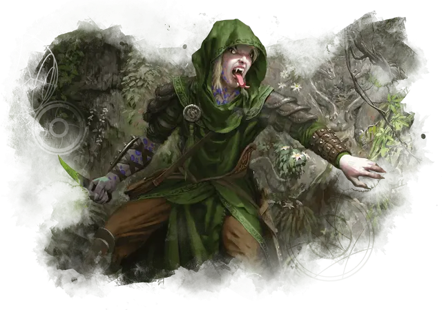

Юань-ти
Yuan-Ti

Юань-ти изначально были людьми, которые превратились в змеиный народ с помощью древних ритуалов. Большинство юань-ти были превращены в монстров этими ритуалами, но некоторые юань-ти вместо этого стали новым народом, который смешивает характеристики людей и змей.
Наделённые сопротивлением к магическому и яду благодаря воздействию ритуалов, которые их создали, каждый из этих юань-ти проявляет своё змеиное наследие различными способами: раздвоенный язык, змеиные глаза, змееподобный нос или некоторые другие змеиные характеристики. Как бы ни выглядели юань-ти, у них есть сила нести великое добро или зло в мультивселенной.
ОСОБЕННОСТи Юань-ти
Вы обладаете следующими особенностями.
Увеличение характеристик. Выберете одно из: (а) Значение одной характеристики по вашему выбору увеличивается на 2, а другой — на 1; (б) Значение трёх различных характеристик по вашему выбору увеличивается на 1.
Скорость. Ваша базовая скорость ходьбы — 30 футов и вы обладаете скоростью плаванья, равной вашей скорости ходьбы.
Вид существа. Вы — Гуманоид.
Размер. Ваш размер — Маленький или Средний. Вы выбираете его при создании персонажа.
Тёмное зрение. На расстоянии 60 футов вы при тусклом освещении можете видеть так, как будто это яркое освещение, и в темноте так, как будто это тусклое освещение. В темноте вы не можете различать цвета, только оттенки серого.
Сопротивление магии. Вы совершаете с преимуществом спасброски от заклинаний.
Сопротивление яду. Вы с преимуществом совершаете спасброски для того чтобы избежать или окончить на себе состояние отравленный. Вы обладаете сопротивлением урону ядом.
Змеиные заклинания. Вы можете накладывать заклинание дружба с животными [animal friendship] неограниченное количество раз, используя эту особенность, но только на змей. Начиная с 3-го уровня, вы можете накладывать заклинание внушение [suggestion] с помощью этой особенности. После накладывания этого заклинания с помощью особенности вы должны закончить продолжительный отдых, прежде чем сможете вновь наложить его таким образом. Вы также можете накладывать это заклинание, используя любые имеющиеся у вас ячейки заклинаний 2-го уровня или выше.
Кроме того, вы знаете заговор ядовитые брызги [poison spray]. Интеллект, Мудрость или Харизма является вашей базовой характеристикой для этих заклинаний (выберите одну из них при выборе этой расы).
Языки. Ваш персонаж может говорить, читать и писать на Общем и ещё одном языке, который по вашему мнению подходит для персонажа.